Send Apple Card transactions to Airtable
WalletFeed sends your Apple Card, Apple Cash and Savings transactions from your iPhone to a table in Airtable. You make a personal access token in Airtable. Then you paste the token in WalletFeed.
Before you start
You must have these items:
- An iPhone with iOS 26 or a newer version. WalletFeed is available only in the US.
- WalletFeed, with access to your Wallet accounts. Refer to First steps with WalletFeed.
- WalletFeed Pro. Destinations are part of WalletFeed Pro. WalletFeed Pro is a subscription with a 1-week free trial, or a one-time Lifetime purchase.
- An Airtable account. You can make an account at airtable.com.
- A web browser for the Airtable steps. The screenshots show Airtable on a computer.
Step 1: Make a base in Airtable
A base is an Airtable database. If you have a base for your transactions, go to Step 2.
-
On your computer, get access to your Airtable account.
-
On Home, click + Create at the bottom of the sidebar.
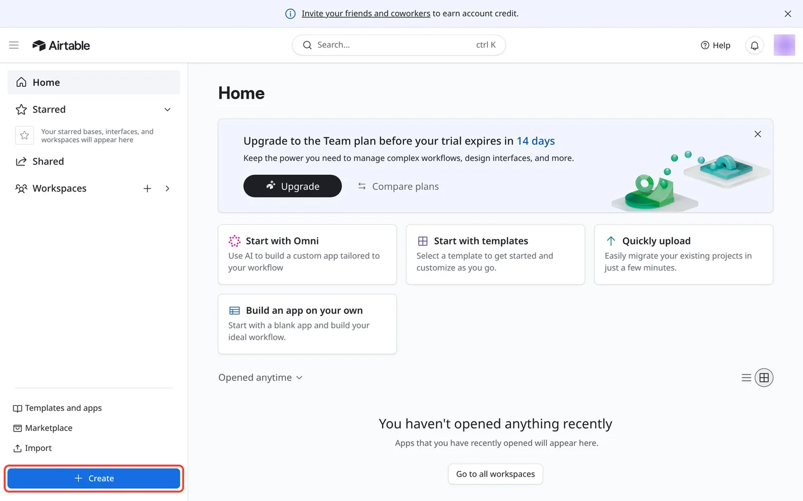
-
Click Build an app on your own.
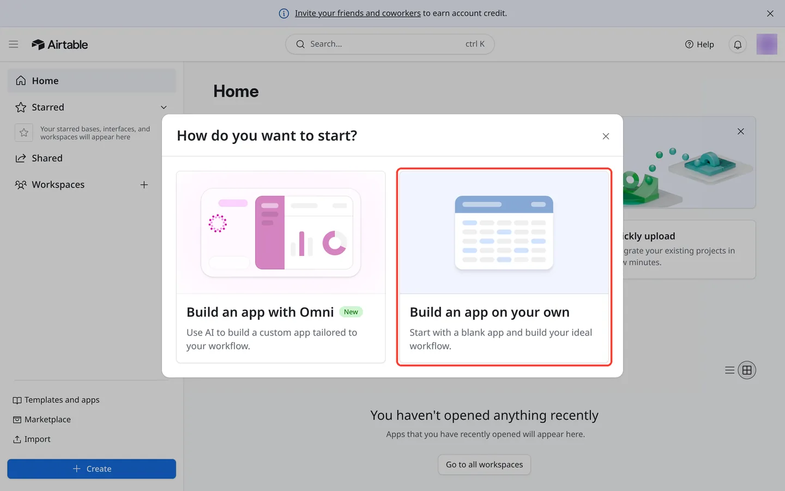
Airtable opens a new base with the name Untitled Base. In this dialog, Airtable uses "app" for a base. On the base and in the token form, Airtable uses "base".
-
If Airtable shows a message with a Skip or Dismiss button, click the button.
-
Click Untitled Base, at the top of the page.
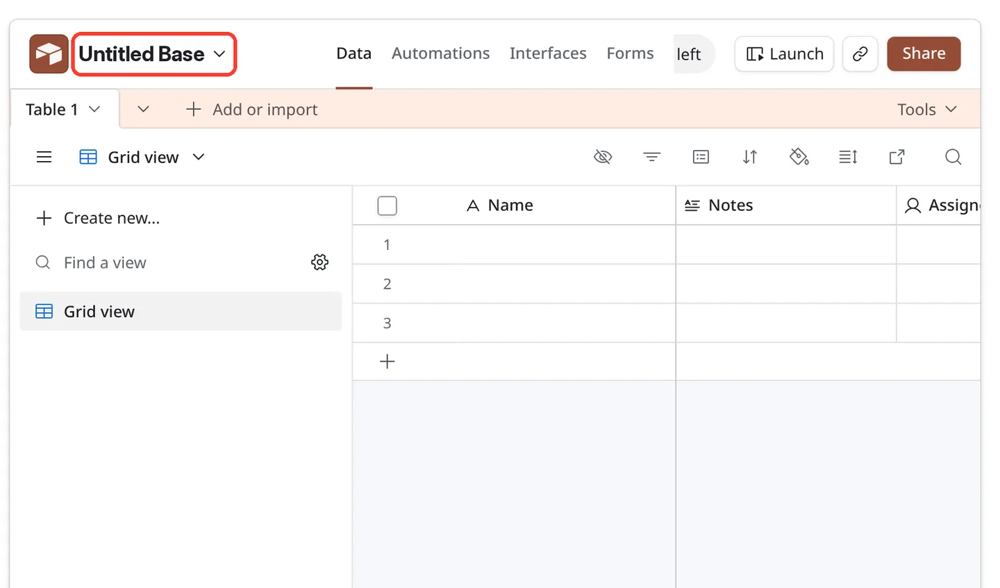
-
In the Base name box, delete Untitled Base.
-
Type a name for the base, for example
WalletFeed.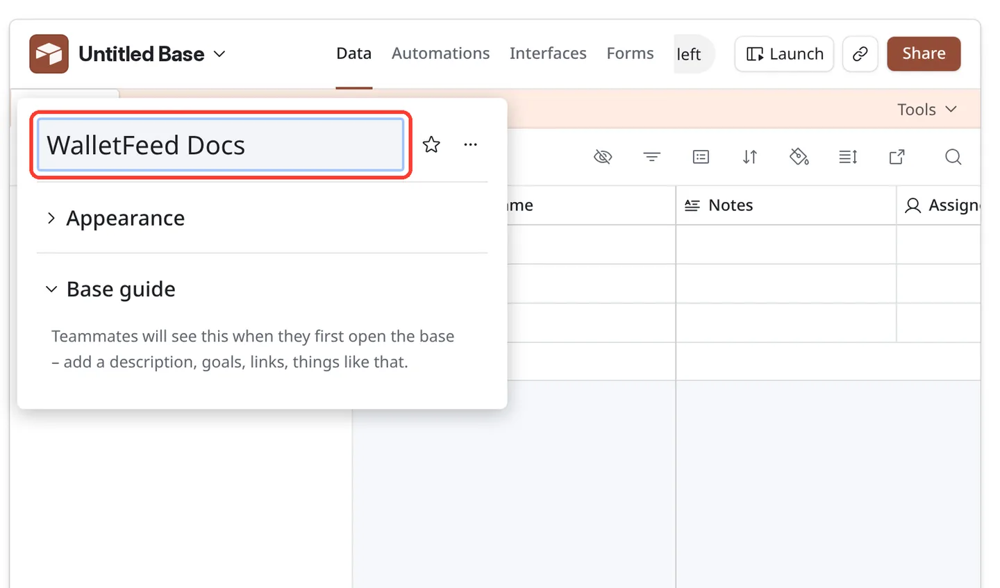
-
Press Return or Enter.
-
Click outside the panel.
Step 2: Make a personal access token in Airtable
-
On your computer, open Airtable.
-
On Home, click your account picture in the top-right corner.
-
Click Builder hub.
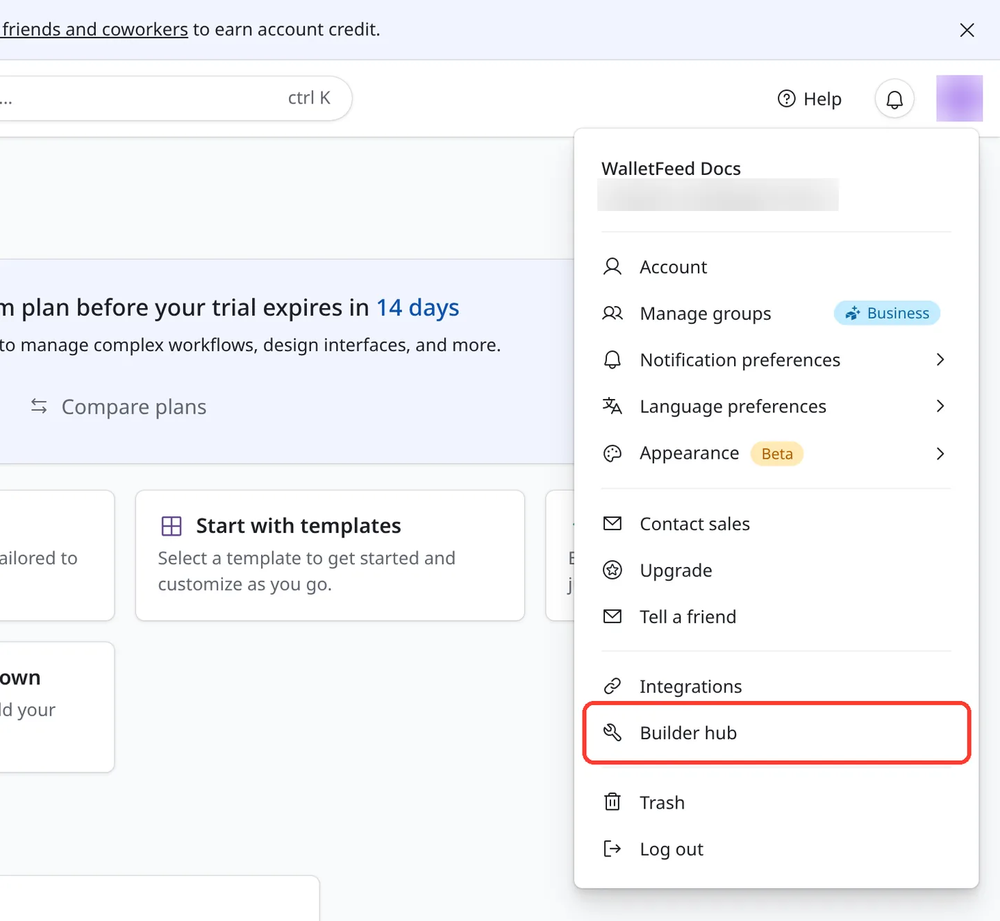
Airtable opens Builder hub in a new browser tab, on the Personal access tokens page.
-
Click Create token.
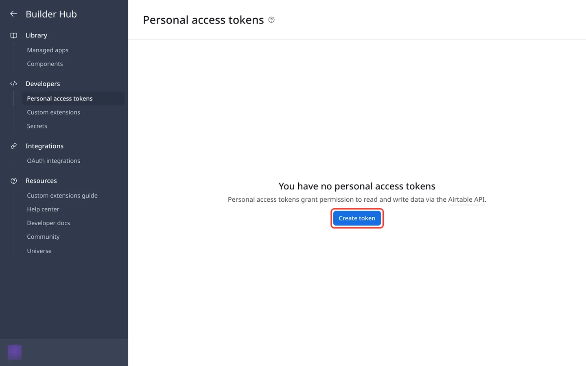
-
In Name, type
WalletFeed.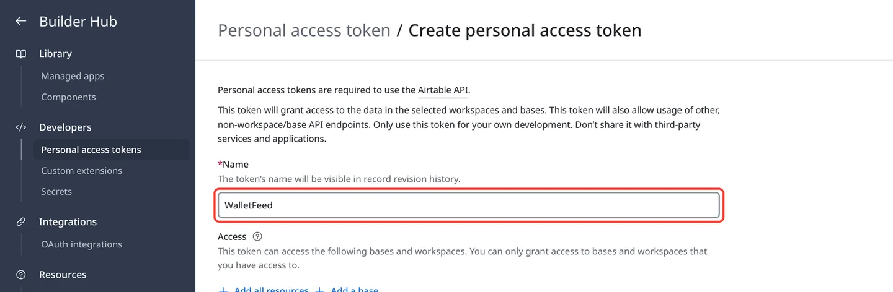
Airtable shows this name in the revision history of the records that WalletFeed writes. The form also tells you not to give the token to third-party apps. Refer to The Airtable text about third-party apps.
-
Below Scopes, click + Add a scope.
-
In Find a scope, type
data.records. -
Select
data.records:readanddata.records:write.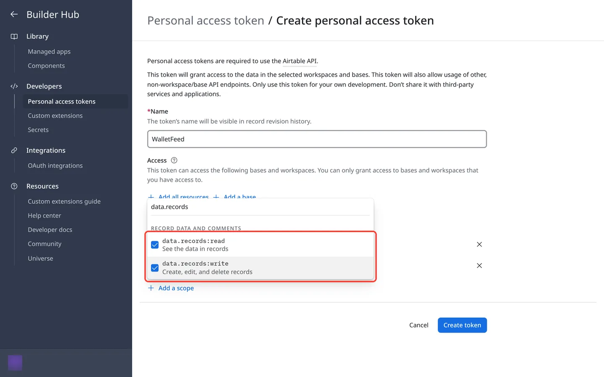
-
In Find a scope, replace the text with
schema.bases. -
Select
schema.bases:readandschema.bases:write.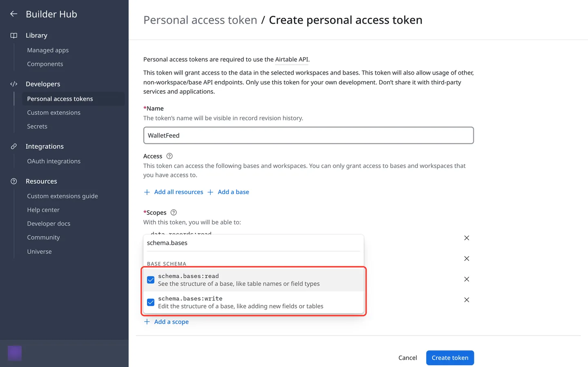
-
To close the list, press Esc.
-
Make sure that the form shows the four scopes below Scopes.
-
Below Access, click + Add a base.
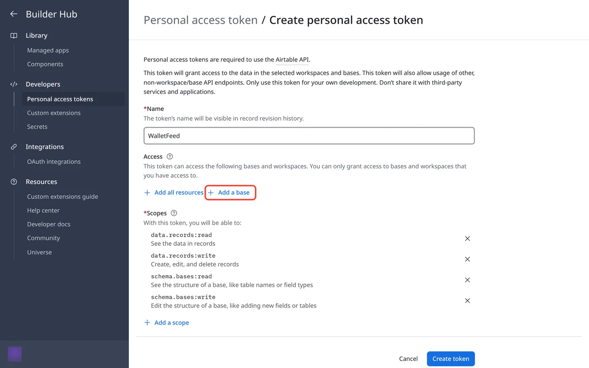
-
Click your base, below the name of its workspace.
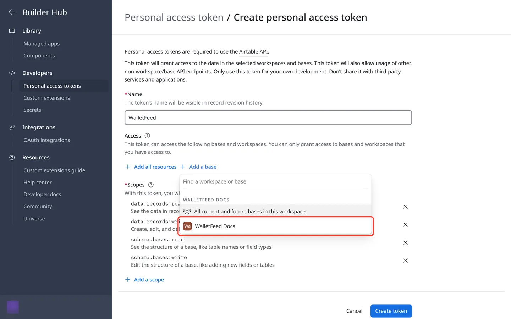
The token has access only to this base. If you click All current and future bases in this workspace, the token gets access to all the bases in the workspace.
-
Click Create token.
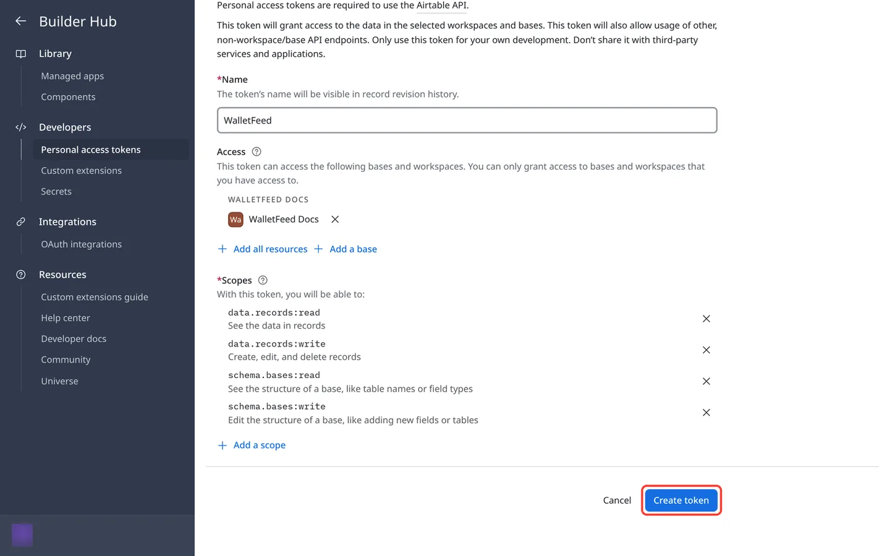
-
In the Your token has been created dialog, click the clipboard button on the right side of the token.
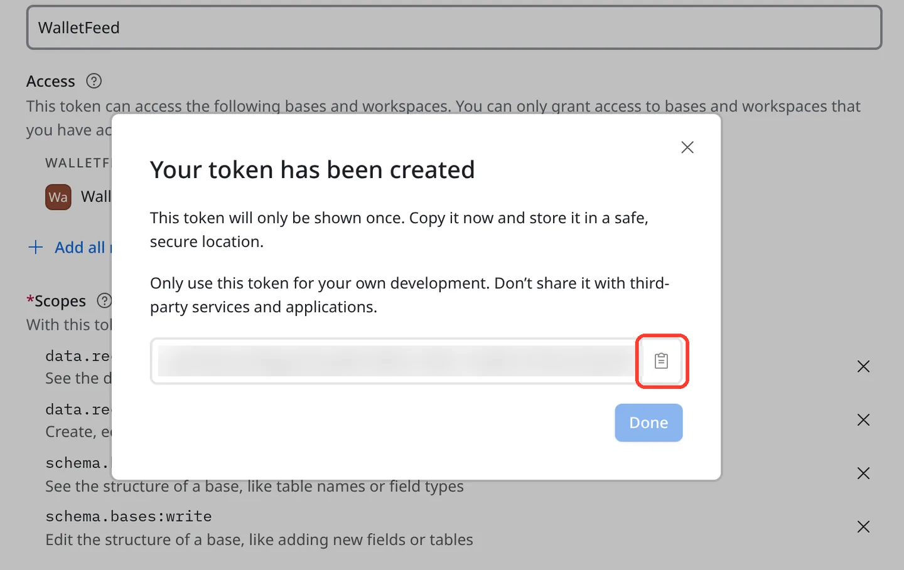
Airtable shows the token only one time. You cannot click Done until you copy the token.
-
Click Done.
-
Until you paste the token in Step 3, do not copy different text.
The Airtable text about third-party apps
In the token form and in the token dialog, Airtable shows the text "Only use this token for your own development. Don't share it with third-party services and applications." WalletFeed is a third-party app. These items give information about the token in WalletFeed:
- WalletFeed keeps the token in the Keychain on your iPhone. The token does not go to iCloud Keychain.
- WalletFeed sends the token only in requests to the Airtable API. WalletFeed has no account and no WalletFeed servers. Your transactions go from your iPhone directly to Airtable.
- The token has access only to the base or the workspace that you added in Step 2. The token can do only the tasks that its four scopes let it do.
- If you delete the token in Airtable, WalletFeed has no access to your base. Refer to Change or remove the destination.
Step 3: Add Airtable in WalletFeed
-
On your iPhone, open WalletFeed.
-
Tap Destinations.
-
Tap + at the top of the screen.

-
Tap Airtable, in Sheets & Databases.

If you do not have WalletFeed Pro, WalletFeed shows the WalletFeed Pro screen first.
-
Tap Personal Access Token.
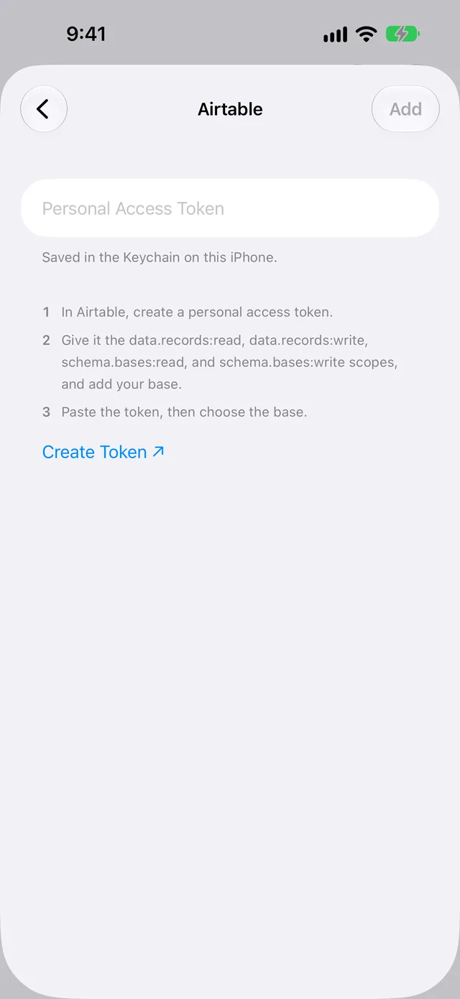
-
Paste the token.
The form then shows Base and Table. Base shows the bases that the token can change.
-
In Base, select your base.
-
Do not change Table.
Table shows New Table, and the form shows "Adds a WalletFeed Transactions table to the base." If the base has a WalletFeed Transactions table from a previous destination, Table shows that table.
-
Tap Add.
The message Send Transactions to Airtable? gives the data that Airtable will receive, the accounts and the start date.
-
Tap Send.
If you tap Cancel, WalletFeed sends nothing and removes the destination.
The new destination is in Destinations. Its name has two parts, for example Airtable · WalletFeed. The second part is the name of your base. WalletFeed starts to send your transactions.
Step 4: Look at your transactions in Airtable
-
On your computer, open your base in Airtable.
-
Click the WalletFeed Transactions tab.
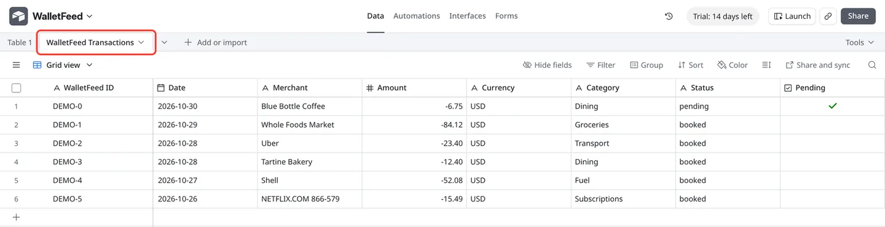
-
Move the pointer to the row of a transaction.
-
In the row, click the expand icon.
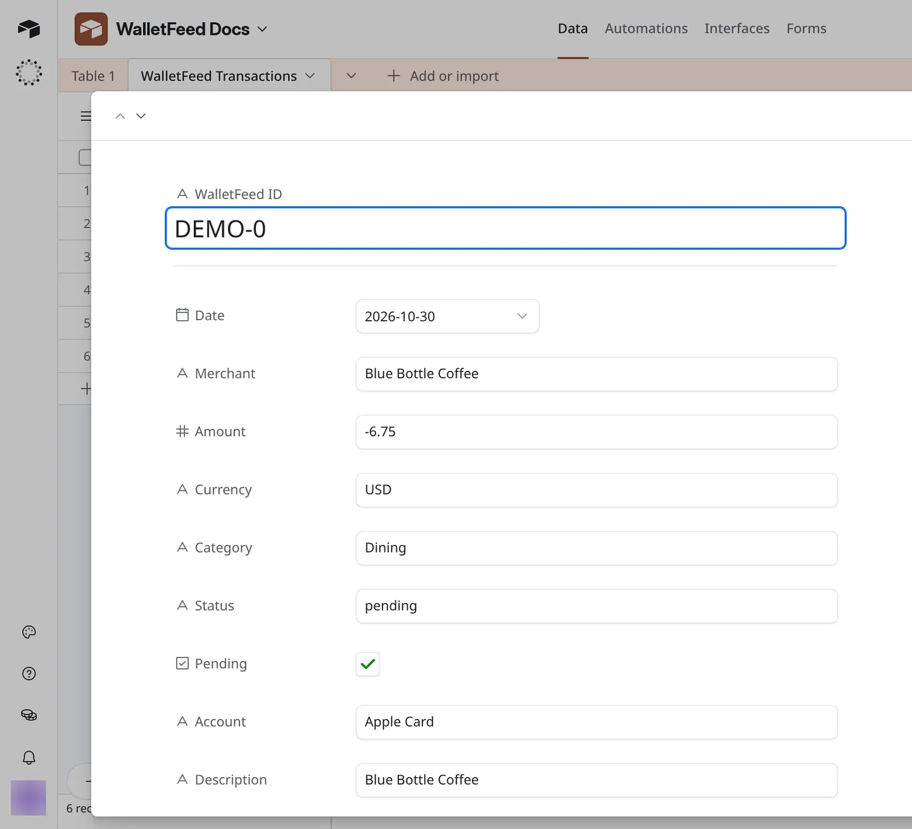
Airtable shows all the fields of the transaction.
To add a test record, do these steps on your iPhone:
-
In WalletFeed, tap Destinations.
-
Tap your Airtable destination.
-
Tap Send Test.
The table gets a test record with WalletFeed in Merchant and -4.20 in Amount. You can delete this record in Airtable.
Fields in Airtable
Each transaction is one record in the WalletFeed Transactions table. WalletFeed makes these fields:
| Airtable field | Data |
|---|---|
| WalletFeed ID | The ID of the transaction in Wallet. WalletFeed uses it to find and change the same record. |
| Date | The date of the transaction in your time zone, for example 2026-10-30. |
| Merchant | The name of the merchant. If Wallet has no merchant name, this field contains the description. |
| Amount | A number with two decimal places. A purchase or a fee is less than zero, and a refund or a payment is more than zero. |
| Currency | The currency code, for example USD. |
| Category | The WalletFeed category, for example Groceries or Fuel. |
| Status | The status in Wallet, for example pending or booked. |
| Pending | A checkbox. WalletFeed selects it while the status is pending or authorized. |
| Account | The name of the Wallet account, for example Apple Card. |
| Description | The description from Wallet. |
| Type | The type of transaction in Wallet, for example pointOfSale or refund. |
| MCC | The merchant category code, as a number. If Wallet has no code, this field is empty. |
| Foreign Amount | The value in the currency of the merchant, with the same sign as Amount. This field is empty for a purchase in US dollars. |
| Foreign Currency | The currency code of the merchant. This field is empty for a purchase in US dollars. |
WalletFeed does not change the fields that you add to the table. If you change a WalletFeed field in a record, WalletFeed replaces your change when that transaction changes again.
When you add Airtable in WalletFeed, you can select a different table in Table. The list in Table shows only the tables that have a field with the name WalletFeed ID. WalletFeed writes only to the WalletFeed fields that the table has. If you add a WalletFeed field to the table, WalletFeed writes to it after you tap Send Test.
New and changed transactions
WalletFeed sends each change in Wallet to Airtable:
- While WalletFeed is open, Airtable receives changes in seconds.
- When WalletFeed is not open, iOS starts WalletFeed approximately 1 hour or less after a change in Wallet. If Background Sync is on in Settings › Sync, WalletFeed then sends the change. Background Sync is on until you set it to off.
- When your iPhone starts again, WalletFeed cannot send changes until you type your iPhone passcode.
When a transaction changes in Wallet, WalletFeed changes the table:
- WalletFeed adds a pending charge as a record and selects the Pending checkbox. When the status of the charge changes to
booked, WalletFeed changes the same record and clears the checkbox. - A refund is a new record, and its Amount is more than zero.
- If the status of a pending charge changes to
rejected, WalletFeed removes the record of the charge. Wallet gives this status to a declined or expired charge. - If Wallet removes a transaction, WalletFeed also removes its record.
Send previous transactions
A new destination also receives previous transactions from the start date in Settings › Sync › Initial History. Initial History is All until you change it.
To send previous transactions after you add the destination, do these steps:
- In WalletFeed, tap Destinations.
- Tap your Airtable destination.
- Tap Send History.
- Select 30 Days, 90 Days, 1 Year or All.
To stop WalletFeed while it sends these transactions, tap Send History › Stop Sending. For more information, refer to Send previous transactions.
On the Airtable Free plan, you can decrease the number of records in the base. To do this, set Initial History to a shorter period before you add Airtable.
Change or remove the destination
To open the destination, tap Destinations in WalletFeed. Then tap your Airtable destination. On the destination screen, you can make these changes:
- To send only some transactions, set Filter to on. You can set Include, Minimum, Include Pending, Accounts, Categories and Exclude. Refer to Choose what a destination receives.
- To stop the destination for a period, set Enabled to off.
- To use a new token, tap Replace Token. Paste the new token. Then tap Replace. WalletFeed keeps the new token only if the new token lets WalletFeed read the table.
- To remove the destination, tap Delete. Then tap Delete again. WalletFeed removes the destination and its token from your iPhone.
If you remove the destination, the records that WalletFeed sent stay in Airtable. The terms of Airtable are applicable to these records.
To delete the token in Airtable, do these steps on your computer:
-
On Home in Airtable, click your account picture in the top-right corner.
-
Click Builder hub.
Airtable opens the Personal access tokens page.
-
In the row of the token, click ….
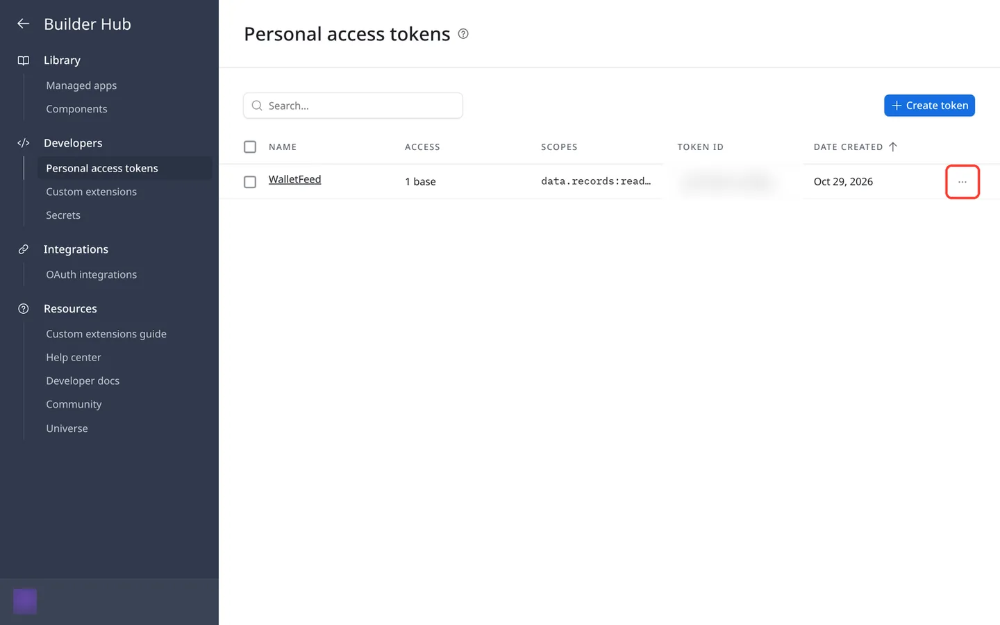
-
Click Delete token.
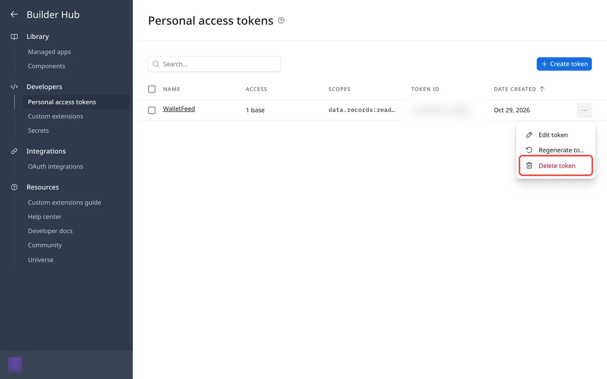
-
Click Delete.
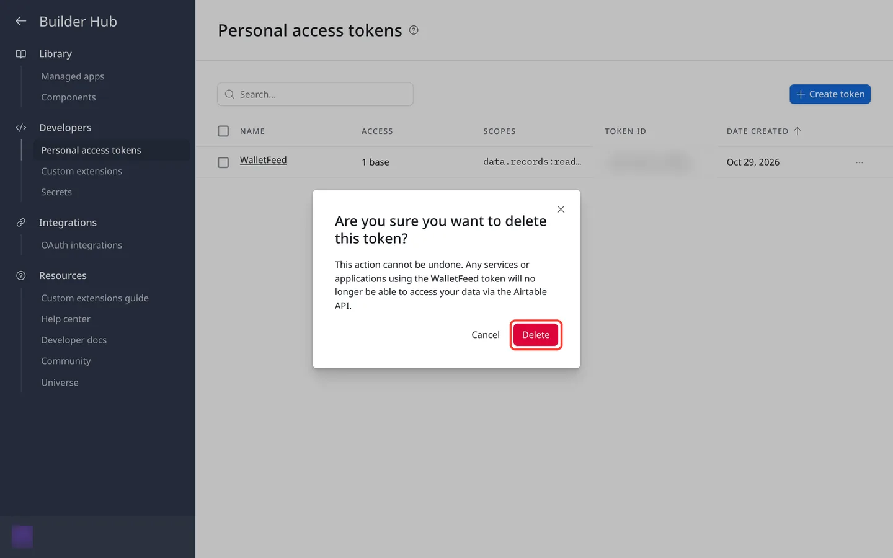
After this step, Airtable does not accept the token from WalletFeed.
If there is a problem
If you cannot click Done in the token dialog
Airtable does not let you click Done until you copy the token.
- Click the clipboard button on the right side of the token.
- Click Done.
If you closed the token dialog before you copied the token
Airtable shows a token only one time. The Token ID in the token list is not the token.
- Delete the token that you cannot use, with the procedure in Change or remove the destination.
- Make a new token with the procedure in Step 2.
If WalletFeed shows "Token rejected (HTTP 401). Check it and try again."
Airtable did not accept the token.
- Make sure that you pasted the full token from the Your token has been created dialog.
- If you do not have the full token, make a new token with the procedure in Step 2.
- In WalletFeed, delete the text in Personal Access Token.
- Paste the token.
If WalletFeed shows "The token has no base you can edit. Add one to the token."
The token has no base, or you cannot change the bases that the token has.
- In Airtable, make a new token with the procedure in Step 2.
- In WalletFeed, delete the text in Personal Access Token.
- Paste the new token.
If WalletFeed shows "The token can't reach this base. Add the base and every scope to it."
The token does not have the base or one of the four scopes. If you tap Add without the Creator permission for the base, WalletFeed can also show this message. WalletFeed can add the WalletFeed Transactions table only if you have this permission.
- If you do not have the Creator permission for the base, make a base with the procedure in Step 1.
- In Airtable, make a new token with the procedure in Step 2.
- In WalletFeed, delete the text in Personal Access Token.
- Paste the new token.
If WalletFeed shows "Airtable is limiting requests. Try again in 30 seconds."
Airtable accepts not more than five requests each second for one base. If a base gets more than five requests in one second, Airtable rejects requests for 30 seconds.
- After 30 seconds, do the last step again in WalletFeed.
If Destinations shows "Authentication failed"
Airtable does not accept the token. This occurs if you deleted the token, or if the token does not have the base or a scope.

- In Airtable, make a new token with the procedure in Step 2.
- In WalletFeed, tap the destination.
- Tap Replace Token.
- Paste the new token.
- Tap Replace.
If some transactions are not in the table
The cause can be a filter or the start date in Initial History.
- In WalletFeed, tap Destinations.
- Tap your Airtable destination.
- Make sure that Filter is off, or that the filter includes these transactions.
- To send previous transactions, tap Send History.
- Select a period.
Related
Updated October 30, 2026